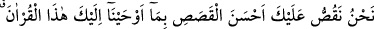
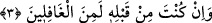

“Araplar en değerli millettir. Çünkü Kur’an’ın ilk muhatapları onlar olduğu gibi din de
Arapların içinde gelişip büyümüştür.”
Bir hadiste şöyle buyrulur: “Şu üç sebepten dolayı Arapları seviniz: Çünkü ben bir
Arabım, Kur’an Arapça’dır, cennetliklerin dili de Arapça’dır.”[3]
Bir hadiste de şöyle buyrulur: “Kıyamet günü, Livâü’l-hamd / Hamd sancağı benim
elimde olacak ve o gün benim sancağıma en yakın Araplar olacaktır.”[4] Başka bir
hadiste şöyle buyrulur: “Arap zelil oldu mu İslâm da zelil olur.”[5]
Yine bir hadiste şöyle buyrulur: “Allah Teâlâ, mahlûkatı yarattığı zaman Cebrâil’i
onlara gönderdi. O da insanları ikiye ayırdı. Arapları bir grup, Arap olmayanları da
başka bir grup yaptı. Allah’ın en seçkin kulları Arapların arasındaydı. Sonra
Arapları da ikiye ayırıp Yemen’i bir grup, Mudar’ı da başka bir grup yaptı. Allah’ın
en seçkin kulları Mudarlılar’ın arasındaydı. Mudar’ı da ikiye ayırdı. Kureyş bu iki
gruptan birini oluşturmaktadır. Allah’ın en seçkin kulları yine Kureyşliler
arasındaydı. Sonra Allah Teâlâ Ben’i, mensûb olduğum bu kabilenin en hayırlısından
ortaya çıkardı.”[6]
O Yesribli bir Arab, kalbi Mekkeli, nesebi Hâşimî
Vahiy sarayında münzevî, ‘ümmetî, ümmetî’ diyen ümmî
Fakir (Bursevî) der ki: Hz. Peygamber (s.a.) bir Arap olduğu için O’nun en kâmil
vârisi de Araplardan zuhûr etmiştir. O da: Şeyh-i Ekber, Misk-i Ezfer ve Kibrit-i Ahmer
Muhyiddin ibn Arabî (k.s.) Hazretleridir. İbnü’l-Arabî’nin en mükemmel vâris
olduğuna onun Hz. Muhammed’e has velâyetin hâtimesi olduğu için hükmediyoruz. O,
bu mertebenin en kâmil mazharlarındandır. Başka hiç kimsede zâhir olmayan üstünlük
onda zuhûr etmiştir. Onun dışındakiler, bu konuda onun sofrasında misâfir gibidirler. Bu
mânâyı kinâye yoluyla değil açıkça ifade ediyoruz. Kötü itikaddan Allah’a sığınırız.
3. (Ey Muhammed) Biz sana bu Kur’an’ı vahyetmekle kıssaların en güzelini
anlatıyoruz. Gerçek şu ki, sen bundan önce (bu haberleri) elbette bilmeyenlerden
idin.
Ey Muhammed “Biz sana bu Kur’an’ı vahyetmekle kıssaların en güzelini” haber ve
söz olarak anlatılan şeylerin en güzelini “anlatıyoruz.” haber veriyor, bildiriyor ve
açıklıyoruz.
Bu kıssa Yâkub âilesinin kıssasıdır. Bu ifadelerden anlaşılan onun kendi sâhasında en
güzel kıssa olduğudur. Nitekim ‘Falanca, insanların en bilgilisi ve en üstünüdür.’
denildiği zaman kendi saha ve branşında en üstün olduğu kasdedilir. Bahru’l-ulûm’da